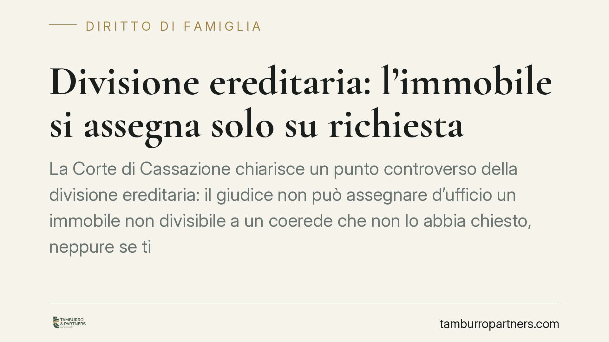

Divisione ereditaria: l'immobile si assegna solo su richiesta
La Corte di Cassazione chiarisce un punto controverso della divisione ereditaria: il giudice non può assegnare d'ufficio un immobile non divisibile a un coerede che non lo abbia chiesto, neppure se titolare della quota maggiore. In mancanza di istanza si procede alla vendita all'incanto. Una precisazione che incide sulla strategia processuale di ogni erede.

Il caso
Una comunione ereditaria aveva a oggetto un immobile non comodamente divisibile: un bene che, per struttura o destinazione, non può essere frazionato in porzioni corrispondenti alle quote senza comprometterne il valore o la funzione.
Nel giudizio di divisione, la figlia titolare della quota maggiore si aspettava che il bene le venisse attribuito in ragione del suo peso nella comunione. Il giudice, invece, aveva disposto la vendita. La questione è arrivata in Cassazione, che ha confermato l'impostazione: senza una domanda espressa di assegnazione, l'immobile va venduto.
Inquadramento normativo
Il riferimento è l'art. 720 c.c., che disciplina la sorte degli immobili non divisibili. La norma prevede che, quando il bene non è comodamente divisibile, esso sia preferibilmente compreso per intero nella porzione di uno dei coeredi con maggiore quota, o di più coeredi che ne chiedano congiuntamente l'attribuzione. Se nessuno ne fa richiesta, si dispone la vendita all'incanto.
Il punto interpretativo risolto dalla Corte riguarda il rapporto tra la preferenza per il titolare della quota maggiore e l'iniziativa di parte. La Cassazione ha stabilito che quella preferenza non si traduce in un potere di assegnazione d'ufficio: il giudice non può attribuire l'immobile a un coerede che non abbia formulato una domanda in tal senso.
In altre parole, la titolarità della quota più consistente crea una posizione di vantaggio solo se il coerede la fa valere. È l'istanza a mettere in moto il meccanismo dell'assegnazione; in sua assenza, l'unica strada rimane la vendita, con distribuzione del ricavato secondo le quote.
La ratio è coerente con il principio dispositivo che governa il processo civile: l'attribuzione di un bene comporta anche l'obbligo di conguaglio verso gli altri coeredi, ossia il pagamento di una somma che riequilibri le quote. Nessuno può essere costretto ad assumere questo onere senza averlo scelto.
Implicazioni pratiche
Per chi affronta una divisione ereditaria con un immobile indivisibile, la conseguenza è diretta: non basta essere l'erede con la quota maggiore per ottenere la casa. Occorre chiederla, e chiederla nel modo e nei tempi corretti.
L'errore tipico è dare per scontato che il giudice assegni il bene a chi "ha più diritto". Non è così. Se l'istanza manca, o è formulata in modo generico, il rischio concreto è la vendita all'incanto, con esiti spesso inferiori al valore di mercato e con la perdita del bene per tutti i coeredi.
La pronuncia rileva anche per chi *non* vuole l'immobile e preferisce liquidare la propria quota: la vendita giudiziaria diventa la conseguenza fisiologica quando nessuno avanza domanda di assegnazione. Chi punta invece a conservare il bene deve muoversi per primo e in modo documentato.
Va considerato, inoltre, il profilo economico. L'assegnatario deve dimostrare la capacità di corrispondere il conguaglio. Una domanda di assegnazione priva di un piano di pagamento credibile può risultare inefficace o essere superata da altre richieste concorrenti.
Cosa fare in concreto
- Formulate la domanda di assegnazione in modo espresso negli atti del giudizio di divisione: non affidatevi alla posizione di quota maggiore come se fosse automatica.
- Valutate in anticipo il conguaglio dovuto agli altri coeredi e verificate la disponibilità finanziaria per sostenerlo, documentandola.
- Fate stimare l'immobile da un tecnico prima dell'udienza, per contestare eventuali valori incongrui e calcolare correttamente il conguaglio.
- Coordinatevi con gli altri coeredi se l'attribuzione può essere chiesta congiuntamente: una richiesta condivisa rafforza la posizione ed evita la vendita.
- Non attendete le fasi finali del procedimento: la tempestività dell'istanza è spesso decisiva rispetto a domande concorrenti.
La lezione è netta. Nella divisione ereditaria il silenzio non conserva diritti: chi vuole l'immobile deve dirlo, con un'istanza precisa e sostenibile.
*Contributo informativo a cura di Tamburro & Partners - Avv. Giuseppe Tamburro. Non costituisce parere legale.*
Ogni famiglia ha il suo equilibrio.
Separazione, divorzio, affidamento, assegno: se vuoi un confronto riservato su una specifica situazione, scrivi allo studio. Ti rispondiamo entro un giorno lavorativo.